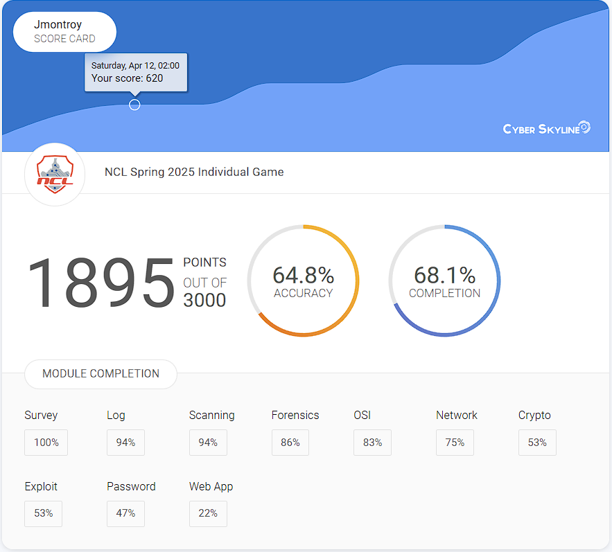
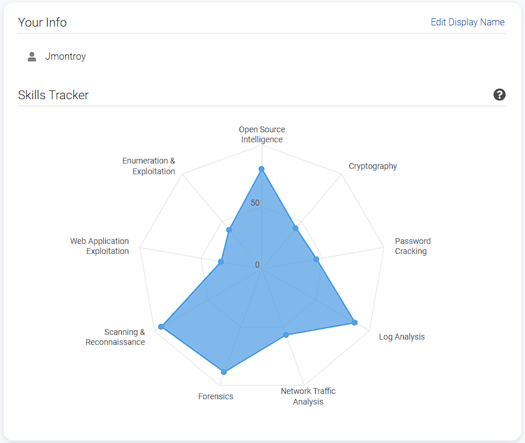
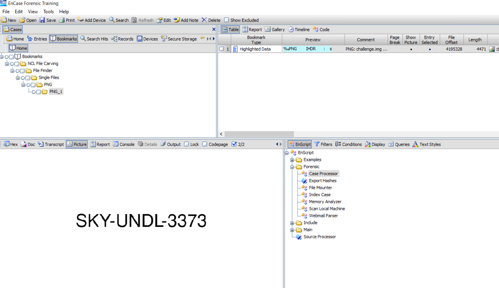
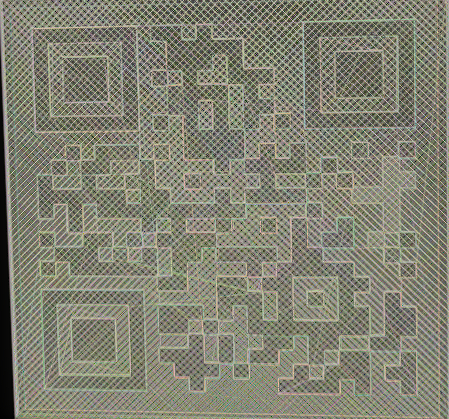

In the Fall of 2024, I participated in my first CTF, National Cyber League. I worked with Loyola Chicago's 7968 cybersecurity team, who helped me set up for the competition. I vividly remember them showing me Kali Linux for the first time, and I was in awe. The competition took place in September of that year, and to that point, I had very little experience with cybersecurity other than understanding how to code in Java. When I competed in the competition, I scored a 1280 out of 3000, and what I excelled at reflected my experience. I scored the highest at OSINT as I have always been quite good at browsing the internet to attain information that I desire. At the time of this first CTF, I was taking my "Introduction to Cybersecurity" course, which was a course centered around the CompTIA Security+ certificate. At the time, we were going over the first units, one of them being cryptography, which I scored well in, in the CTF. Although I did well in some areas, I also understood that there was a lot of room to grow, and I looked forward to bettering my score in the spring.
Spring rolled around and I have now completed the security+ course and have a good understanding of both general security frameworks and the know on how to use certain kali tools to perform such things as password cracking and log analysis. I am currently taking a Digital Forensics course that has taught me the basics of file systems, how to forensically analyze code, and how to carve out deleted files. With the knowledge that I have gained in the past 6 months since my first competition, I was eager to show the improvement I had made.
Spring 2025 Results
I finished with a score of 1895, scoring 665 points higher than in the fall. I scored the highest in log analysis (94%), scanning and reconnaissance (94%), and forensics (86%). This score placed me in the top 25% of participants from Loyola Chicago and just outside of the top 25% of scorers by under 200 points.
 
I am quite satisfied with my improvement in the competition and certain puzzles I really excelled in, and I want to go over my methods of solving them.
My Favorite Challenges
File Carving
I was given a disc image (.img) file and told that there was a deleted file that contained the flag. My first move was to place the file into a hex editor to see if I could find a filename within the image. Fortunately enough for me, I did! I can't remember exactly what it was called, but it was along the lines of ThisIsTheFlag.png, but the data of the file was stored as runlists, which are too low-level to be human-readable. The important thing for me was finding the file type that I was looking for because then I could plug it into EnCase. Using EnCase's file carving feature, I could open the file in EnCase, set the pointer to carve out any .png files that it found. I set it to search on the image file, and boom, I have an image that displays the flag. This challenge was very validating for me because it allowed me to use the skills I have just picked up in my digital forensics class. There is a certain satisfaction to being able to use a skill you just learned with the knowledge that if you hadn't, your score would be lower.

File Analysis
For this challenge, I was given a general file with no labeled type. The only instruction I have is to find the flag. That isn't a lot to go off of, so I open the file in a hex editor. It's like nothing I have ever seen before, so I began looking up certain terms I found in the file on Google. It turns out that the file is G-code. If you have ever 3D printed something, then you have used G-code before. At my summer internship in 2024, I worked with 3D printers a good bit to design and make trinkets to increase efficiency in the office. I had never opened and viewed a G-code before because it is usually created by slicers who take an .stl file and convert it into G-code. It is then directly fed into the 3D printer. My first thought is, well, what is it a 3D model for? When I put it into a g-code visualizer but it is just a black square. Seemingly a roadblock, right? Wrong, 3D printers print in layers, and when I went layer by layer through the print, it revealed a QR code to scan. Here is a screenshot I took of the QR code:

An unfortunate effect of the visualizer was that it displayed the code in a yellowish green color with little contrast between the layers, thus my phone wasn't scanning it. Again, I thought I may have hit a dead end, as in my experience, when phones aren't scanning QR codes, it's because they are invalid. As a last-ditch effort, I opened an online pixel art creator and went pixel by pixel, recreating the 24x24 QR code. To my utter joy, when I held my phone up to my creation, it scanned and gave me the flag I was looking for. This was probably my favorite puzzle of the whole CTF, as I started blind, used my prior knowledge of 3D printing to obtain the QR code, and then went the extra step to recreate it, to ultimately get the flag.
Reverse Engineering
One of the challenges was decompiling and analyzing the assembly language of a file to find out what file the program was acting upon. I did not solve this puzzle, but it really caught my attention. Assembly is quite a low-level language, but I recognize the power that understanding assembly can have. I spent a good portion of time analyzing the functions being called and where things were being moved across directories, but I couldn't find the file, and eventually I moved on. I want to gain a better understanding of assembly because it is such a useful skill to have. Whether it is reverse engineering malware or finding and building vulnerabilities, it is an incredible language to be familiar with it and I am going to begin to study it with a finer lens.
Places To Improve
While I am proud of the things I have accomplished, I still want to work to attain the other 1105 points that I couldn't figure out. Certain areas I want to become more familiar with are web application exploitation, cryptography, and enumeration. A section where I scored less than I could was password cracking. When running Kali Linux, I have always run it through Oracle VirtualBox. A roadblock I ran into when attempting to run hashcat to crack passwords was that the Oracle Kali doesn't have enough allocated memory or processing power to run hashcat. In the future, I am going to set up dual-booting on my laptop so that I can run hashcat and programs with the power of my personal machine. When I was working on this CTF, I wasn't in my apartment and couldn't quickly put Kali on a flash drive and boot it up immediately. I wasn't in a position to do that, and I had to forgo the 100+ points that I would have gained if I could have run hashcat to crack those passwords. It's a good learning experience, and I will have it set up and ready for the next time that I compete.
Goals For The Future
It's always good to have something to work towards and to learn, and I plan on working on these subjects as well as deepening my knowledge of the other subjects to improve my score again in the Fall of 2025. My goal is to be in the top 25% of scorers nationally and top 5 in finishers from Loyola.
Joe Montroy